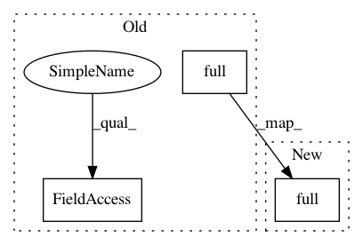

2dc38e78b9c84e3ea907984a2616afc9a34d9dcf,ch07/lib/dqn_model.py,NoisyLinear,__init__,#NoisyLinear#Any#Any#Any#Any#,10
Before Change
class NoisyLinear(nn.Linear):
def __init__(self, in_features, out_features, sigma_init=0.017, bias=True):
super(NoisyLinear, self).__init__(in_features, out_features, bias=bias)
self.sigma_weight = nn.Parameter(torch.full((out_features, in_features), sigma_init))
self.register_buffer("epsilon_weight", torch.zeros(out_features, in_features))
if bias:
self.sigma_bias = nn.Parameter(torch.full((out_features,), sigma_init))
self.register_buffer("epsilon_bias", torch.zeros(out_features))
self.reset_parameters()
After Change
self.register_buffer("sigma_weight", torch.full((out_features, in_features), sigma_init))
self.register_buffer("epsilon_weight", torch.zeros(out_features, in_features))
if bias:
self.register_buffer("sigma_bias", torch.full((out_features,), sigma_init))
self.register_buffer("epsilon_bias", torch.zeros(out_features))
self.reset_parameters()
In pattern: SUPERPATTERN
Frequency: 5
Non-data size: 3
Instances
Project Name: PacktPublishing/Deep-Reinforcement-Learning-Hands-On
Commit Name: 2dc38e78b9c84e3ea907984a2616afc9a34d9dcf
Time: 2018-05-06
Author: max.lapan@gmail.com
File Name: ch07/lib/dqn_model.py
Class Name: NoisyLinear
Method Name: __init__
Project Name: PacktPublishing/Deep-Reinforcement-Learning-Hands-On
Commit Name: 2dc38e78b9c84e3ea907984a2616afc9a34d9dcf
Time: 2018-05-06
Author: max.lapan@gmail.com
File Name: ch07/lib/dqn_model.py
Class Name: NoisyFactorizedLinear
Method Name: __init__
Project Name: nilearn/nilearn
Commit Name: 0c6388a26950beaeec0925e67b9bfb55ccfa2fde
Time: 2020-10-06
Author: 46817791+chouhanaryan@users.noreply.github.com
File Name: nilearn/tests/test_masking.py
Class Name:
Method Name: test_compute_brain_mask
Project Name: sentinel-hub/eo-learn
Commit Name: bb6569b8e314c0ecc2c3b3be8b781b94c69bcaff
Time: 2019-07-22
Author: matic.lubej@sinergise.com
File Name: geometry/eolearn/geometry/transformations.py
Class Name: VectorToRaster
Method Name: execute
Project Name: sentinel-hub/eo-learn
Commit Name: 61f1dce4a2193e1f96adf82fd5e75e76b51aad4f
Time: 2018-10-05
Author: lubej.matic@gmail.com
File Name: features/eolearn/features/interpolation.py
Class Name: InterpolationTask
Method Name: interpolate_data